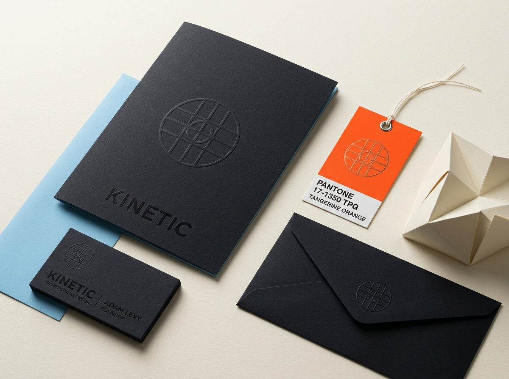
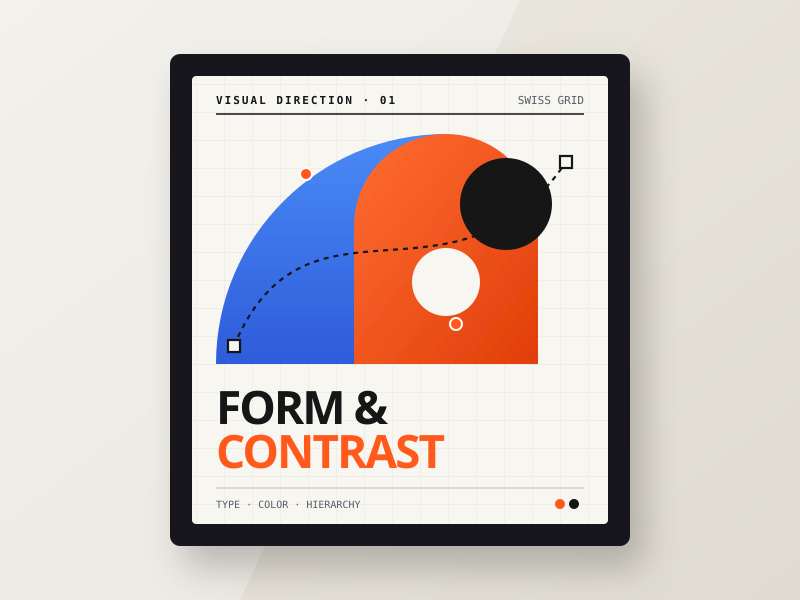
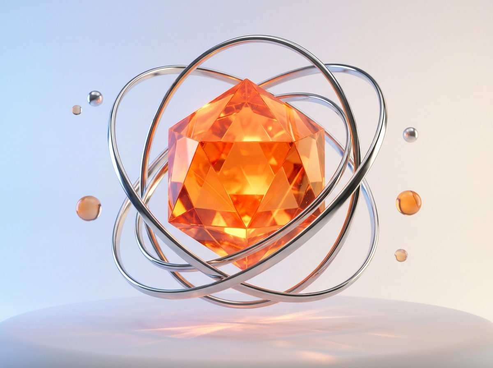
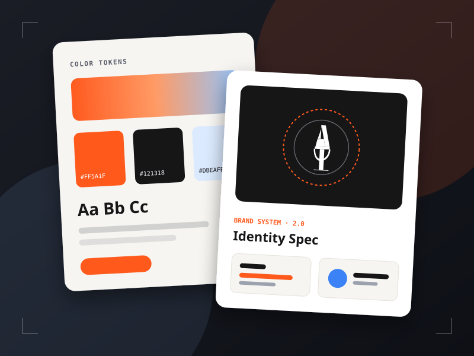
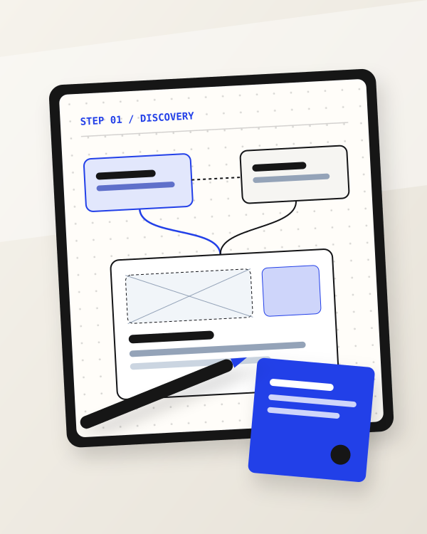
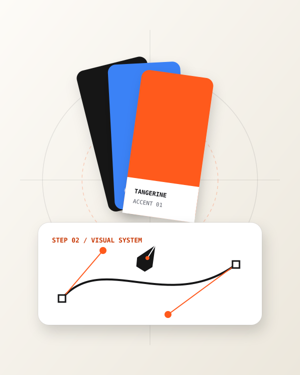
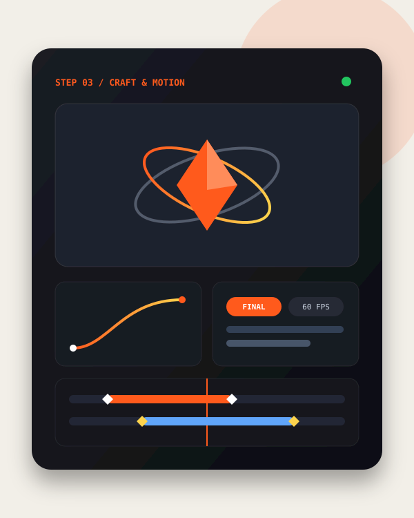

Sony Days
Kampanye Musiman, 2025Key visual promosi akhir tahun yang memadukan fotografi flat-lay produk kamera Alpha, perangkat audio, dan televisi BRAVIA dalam atmosfer perayaan musim liburan.
Desain Grafis, Kampanye Ritel & Identitas Visual
Merancang poster promosi ritel, materi peluncuran produk untuk Sony, serta sistem identitas visual yang jelas saat dilihat sekilas maupun dibaca dekat.


Arah Visual & Sistem Brand
Setiap materi promosi dan identitas dirancang agar punya struktur baca yang jelas, kontras yang tegas, dan eksekusi detail yang rapi di media cetak maupun layar.


Poster kampanye, animasi promosi, dan komposisi produk ditampilkan utuh sesuai proporsi aslinya. Arahkan kursor untuk menghentikan laju, klik karya untuk memperbesar.


Arsip Klien Utama
Rangkaian key visual promosi musiman dan peluncuran produk Sony, dirancang untuk menjaga keterbacaan informasi spesifikasi serta penawaran harga di materi ritel.
Key visual promosi akhir tahun yang memadukan fotografi flat-lay produk kamera Alpha, perangkat audio, dan televisi BRAVIA dalam atmosfer perayaan musim liburan.
Materi pemasaran perangkat pengatur suhu tubuh wearable dengan pembagian bidang visual dingin dan hangat secara kontras beserta ikonografi fitur teknis di bagian bawah.

Visual promosi untuk lini headphone dan earbud peredam bising selama periode liburan bulan Maret.

Tata letak materi ritel yang menonjolkan fotografi perangkat ponsel Xperia dan ringkasan keunggulan kamera bagi pengunjung toko.
Eksplorasi Produk & Identitas
Studi perancangan tampilan aplikasi, sistem visual halaman arahan, dan identitas produk digital.
Laboratorium Gerak Interaktif
Delapan studi gerak prosedural yang dirender langsung di kanvas HTML5 pada 60fps. Gerakkan kursor di atas kanvas untuk berinteraksi, atau klik untuk tampilan layar penuh.
Cakupan Keahlian
Menggabungkan ketajaman komposisi desain grafis dengan pemahaman struktur antarmuka dan animasi gerak.
Alur Kerja Studio
Dari pembacaan brief hingga file siap rilis, setiap proyek melewati tiga tahapan berurutan agar pesan bisnis tersampaikan secara akurat.
Membedah tujuan kampanye, mengenali target audiens, serta menyusun hierarki informasi utama sebelum masuk ke eksplorasi bentuk.
Merancang tata letak, skala tipografi, palet warna, dan komposisi key visual agar tetap konsisten saat diturunkan ke berbagai ukuran media.
Menyempurnakan ketajaman aset, menambahkan animasi gerak atau elemen 3D bila diperlukan, lalu menyiapkan file akhir siap tayang.



Tanggapan Rekan & Klien
"Proses redesign-nya bikin nilai bisnis kami jauh lebih jelas. Hasilnya bukan cuma rapi secara visual, tapi juga membantu kami lebih percaya diri saat presentasi ke investor."
"Kerja bareng Aditya terasa sangat terarah. Prosesnya cepat, komunikasinya lugas, dan materi desain yang dikirim langsung siap dipakai oleh tim kami."
"Setelah halaman kami ditata ulang, informasi produk jadi jauh lebih mudah dipahami pengunjung. Tampilan barunya terasa matang dan sesuai dengan karakter audiens kami."
Pertanyaan Umum
Hubungi langsung lewat email atau LinkedIn untuk berdiskusi, atau kunjungi halaman portofolio UI/UX & Motion saya untuk melihat studi kasus antarmuka secara mendalam.